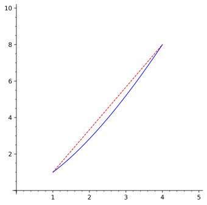
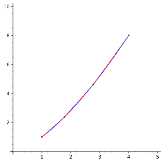

Compute arclengths related to two-dimensional parametric/vector equations.
Subsection7.3.1Activities
Example7.3.1.
In Figure 164, the blue curve is the graph of the parametric equations \(x=t^2\) and \(y=t^3\) for \(1\leq t\leq 2\text{.}\) This curve connects the point \((1,1)\) to the point \((4,8)\text{.}\) The red dashed line is the straight line segment connecting these points.

Figure164.A parametric curve and segment from \((1,1)\) to \((4,8)\)
Activity7.3.2.
Let’s first investigate the length of the dashed red line segment in Figure 164.
(a)
Draw a right triangle with the red dashed line segment as its hypotenuse, one leg parallel to the \(x\)-axis, and the other parallel to the \(y\)-axis.
How long are these legs?
\(3\) and \(7\text{.}\)
\(4\) and \(8\text{.}\)
\(3\) and \(8\text{.}\)
\(4\) and \(7\text{.}\)
(b)
The Pythagorean theorem states that for a right triangle with leg lengths \(a,b\) and hypotenuse length \(c\text{,}\) we have...
\(a=b=c\text{.}\)
\(a+b=c\text{.}\)
\(a^2=b^2=c^2\text{.}\)
\(a^2+b^2=c^2\text{.}\)
(c)
Using the leg lengths and Pythagorean theorem, how long must the red dashed hypotenuse be?
\(\sqrt{20}\approx 4.47\text{.}\)
\(\sqrt{58}\approx 7.62\text{.}\)
\(\sqrt{67}\approx 8.19\text{.}\)
\(\sqrt{100}=10\text{.}\)
(d)
Compared with the blue parametric curve connecting the same two points, is the red dashed line segement length an overestimate or underestimate?
Overestimate: the blue curve is shorter than the red line.
Underestimate: the blue curve is longer than the red line.
Exact: the blue curve is exactly as long as the red line.
Fact7.3.3.
Recall that the linear distance between two points \((x_1,y_1)\) and \((x_2,y_2)\) may be computed by the distance formula
Note that \(\Delta x=|x_2-x_1|\) and \(\Delta y=|y_2-y_1|\) measure leg lengths of a right triangle whose hypotenuse is the distance we want to measure, so we may rewrite this formula as
This formula will need to be modified to measure a curved path between two points.
Observation7.3.4.
By approximating the curve by several (say \(N\)) segements connecting points along the curve, we obtain a better approximation than a single line segment. For example, the illustration shown in Figure 165 gives three segments whose distances sum to about \(7.6315\text{,}\) while the actual length of the curve turns out to be about \(7.6337\text{.}\)

Figure165.Subdividing a parametric curve where \(N=3\)
Activity7.3.5.
How should we modify the distance formula \(\sqrt{(\Delta x)^2+(\Delta y)^2}\) to measure arclength as illustrated in Figure 165?
(a)
Let \(\Delta L_1,\Delta L_2,\Delta L_3\) describe the lengths of each of the three segements. Which expression describes the total length of these segments?
We can let each \(\Delta L_i=\sqrt{(\Delta x_i)^2+(\Delta y_i)^2}\text{.}\) But we will find it useful to involve the parameter \(t\) as well, or more accurately, the change \(\Delta t_i\) of \(t\) between each point of the subdivision.
Which of these is algebraically the same as the above formula for \(\Delta L_i\text{?}\)
by checking to make sure it matches the distance formula for line segments.
The parametric equations \(x=3t-1\) and \(y=2-4t\) for \(1\leq t\leq 3\) represent the segment of the line \(y=-\frac{4}{3}x-\frac{2}{3}\) connecting \((2,-2)\) to \((8,-10)\text{.}\)
(a)
Find \(dx/dt\) and \(dy/dt\text{,}\) and substitute them into the formula above along with \(a=1\) and \(b=3\text{.}\)
(b)
Show that the value of this formula is \(10\text{.}\)
(c)
Show that the length of the line segment connecting \((2,-2)\) to \((8,-10)\) is \(10\) by applying the distance formula directly instead.
to write a definite integral that computes the given length. (Do not evaluate the integral.)
(a)
The portion of \(x=\sin 3t, y=\cos 3t\) where \(0\leq t\leq \pi/6\text{.}\)
(b)
The portion of \(x=e^t, y=\ln t\) where \(1\leq t\leq e\text{.}\)
(c)
The portion of \(x=t+1, y=t^2\) between the points \((3,4)\) and \((5,16)\text{.}\)
Activity7.3.9.
Let’s see how to modify \(\int_{t=a}^{t=b} \sqrt{\left(\frac{dx}{dt}\right)^2+\left(\frac{dy}{dt}\right)^2}dt\) to produce the arclength of the graph of a function \(y=f(x)\text{.}\)
(a)
Let \(x=t\text{.}\) How can \(\frac{dx}{dt}\) be simplified?
\(\displaystyle dx\)
\(\displaystyle dt\)
\(\displaystyle 1\)
\(\displaystyle 0\)
(b)
Given \(x=t\text{,}\) how should \(\frac{dy}{dt}\) and \(dt\) be rewritten?
\(\frac{dy}{dt}=\frac{dy}{dx}\) and \(dt=dx\text{.}\)
\(\frac{dy}{dt}=\frac{dx}{dt}\) and \(dt=dx\text{.}\)
\(\frac{dy}{dt}=\frac{dy}{dx}\) and \(dt=1\text{.}\)
\(\frac{dy}{dt}=\frac{dy}{dt}\) and \(dt=1\text{.}\)
(c)
Write a modified, simplified formula for \(\int_{t=a}^{t=b} \sqrt{\left(\frac{dx}{dt}\right)^2+\left(\frac{dy}{dt}\right)^2}dt\) with \(t\) replaced with \(x\text{.}\)